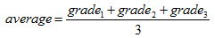
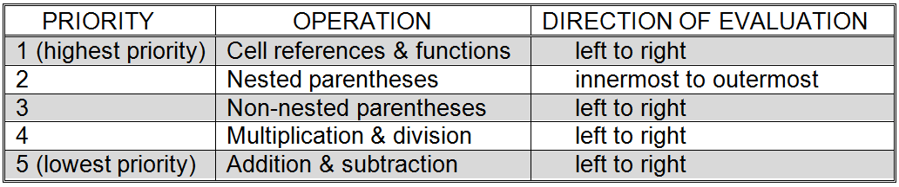
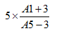

While spreadsheet formulas and mathematical expressions are quite similar, one difference between the two is that spreadsheet formulas use cell references, rather than variables like X and Y. There are other differences as well.
In order to begin to understand these differences let’s consider how we would go about constructing a spreadsheet that would convert a temperature expressed in degrees Celsius into one expressed in degrees Fahrenheit. The standard equation that expresses the relationship between these two temperature scales is:

This expression cannot be entered directly into a spreadsheet for two main reasons. First, it refers to the variables F and C rather than to spreadsheet cell locations, and second the expression is an equation. The first point is rather obvious; the second point is subtle but important. Mathematical equations are essentially statements of fact, which say that two quantities are equal. Spreadsheet formulas, instead of expressing equivalence, specify a sequence of mathematical operations that are to be performed.
In order to construct a spreadsheet to perform temperature conversions from Celsius to Fahrenheit, we must first decide which spreadsheet cell will contain the input – the temperature in degrees Celsius – and which cell will hold the output – the same temperature expressed in degrees Fahrenheit. Let’s say that we decide to place the input in cell B2 and would like the result to be placed immediately below it, in cell B3.
Under these conditions, B2 will take the place of C in the above expression. But, what about F? It will not appear directly in the formula. Instead, B3, the cell corresponding to F, will be the cell in which we place the formula that describes how to perform the temperature conversion. Specifically, the following formula will be placed in cell B3:
= 9 / 5 * B2 + 32
This formula instructs the spreadsheet to divide 9 by 5 and then multiply the result by whatever value is stored in cell B2, and finally to take that result and add 32. The final result of this computation will then be displayed in the cell that contains the formula, cell B3 in this case.
Note that the symbol for multiplication must be included between 9 / 5 and B2. Even thought he rules of algebra allow multiplication to be implied by writing two quantities next to one another, spreadsheets require that all multiplication operations be explicitly indicated by the “*” symbol. Many people familiar with spreadsheet formulas would also add parentheses around 9 / 5, giving = (9 / 5) * B2 + 32, to make the formula easier to read, even though the parentheses are not strictly required in this case.
The above example is illustrated in . The number 0 is stored in cell B2, in order to represent an input of zero degrees Celsius. Cell B3 holds the formula that will compute the equivalent temperature in degrees Fahrenheit. In order to improve the readability of the spreadsheet, the text strings “Celsius” and “Fahrenheit” have been placed in cells C2 and C3, respectively. Note that this example includes all three types of data that a spreadsheet may hold: numbers, formulas, and text strings.
It is important to clearly understand that cell B3 in the spreadsheet of contains a formula and not a number. The value 32 is displayed in cell B3 because that is the value currently being computed by the formula stored in the cell. In order to see the formula underlying a cell, simply click on the cell. In cell B3 has been highlighted and its underlying formula is displayed immediately above the spreadsheet.
A spreadsheet for converting temperatures from Celsius to Fahrenheit
At this point it would be natural to think to yourself, “Wow, that was a lot of work to go through just to show that 0 degrees Celsius is equal to 32 degrees Fahrenheit.” And you would be right if that was all this spreadsheet could do.
The power of spreadsheets lie in their ability to automatically recalculate and update values that depend on other values. In the case of the current example, changing the value stored in cell B2 will cause the formula in cell B3 to be recomputed. So, if the value of 100 were placed in B2, the value displayed in B3 would automatically change to 212. The Fahrenheit equivalent of any temperature expressed in degrees Celsius can be computed just as easily – simply enter the temperature in Cell B2.
Another example of spreadsheet formulas can be found by returning to . The spreadsheet of computes the average of three grades, stored in cells C2, C3, and C4, and places the result into cell C6. Since the average of three grades is given by the equation:
-

the formula:
= ( C2 + C3 + C4 ) / 3
should be entered into location C6. The parentheses are a critical part of the formula in this case, since all three grades must be added together and then that sum divided by 3. If the parentheses had been omitted, only the last grade, C4, would have been divided by three. This is due to the fact that division has a higher precedence than addition and so would be performed first.
In order to be able to work with spreadsheets effectively, it is important that you fully understand operator precedence. Operator precedence specifies the order in which the individual mathematical operations that make up a formula are to be performed.
summarizes the priorities of the most common spreadsheet operators. Using this information, let’s take a closer look at exactly how a spreadsheet formula is evaluated.
Operator precedence in spreadsheets

The evaluation of the spreadsheet formula = 9/5 * B2 + 32
The process of evaluating a formula may be envisioned as scanning the formula from left to right for priority one operations, stopping to perform each operation that is encountered, and then repeating this process for priorities 2 through 5.[10]
As mentioned above, a temperature can be converted from Celsius to Fahrenheit using the formula: = 9 / 5 * B2 + 32, assuming cell B2 contains the input temperature in degrees Celsius. The first step in computing a value from this, or any other, formula involves resolving all cell references and function calls in a left to right manner. This formula contains only a single reference, to cell B2, and no function calls.[11] So, the reference to B2 can be replaced with the value currently stored in that cell. Let us assume 100 is the value currently stored in B2. Our formula has now been reduced to = 9 / 5 * 100 + 32.
Next the formula must be scanned for parentheses. None are found so we consider priority 4 operations: multiplication and division. The first such operation encountered in a left to right scan is “/”, so 9 / 5 is evaluated, producing 1.8. The formula has thus been reduced to = 1.8 * 100 + 32. The operation 1.8 * 100 is performed next, leading to the formula = 180 + 32. As there are no more priority 4 operations, we move on to priority 5 and find one remaining operation to be performed. The operation 180 + 32 is carried out to produce the final result of 212. summarizes this computation.
As alluded to above, the order in which the operations of a formula are carried out can dramatically affect the final computed value. This concept is illustrated further in . As can be seen in the figure, = 5 + 1 / 6 + 3 evaluates to 8.167, since the division is performed first, followed by the two addition operations, in left to right order. Placing parentheses around 5 + 1 leads to the formula = ( 5 + 1 ) / 6 + 3 which evaluates to 4, and so on. When multiple sets of parentheses appear in a formula they are evaluated from left to right, as can be seen in the example = ( 5 + 1 ) / ( 6 + 3 ) which is equivalent to the fraction 6 / 9 or 0.667.
Parentheses may also be nested to create more complex expressions. For example, the expression
-

can be represented by the formula: = 5 * ( ( A1 + 3 ) / ( A5 – 3 ) ).
When sets of parentheses are nested within one another, the rule is to evaluate them from the innermost set to the outermost set. Hence, if A1 is 5 and A5 is 7, the above formula evaluates to 10.
- = 5 * ( ( 5 + 3 ) / ( 7 – 3 ) )
- = 5 * ( 8 / ( 7 – 3 ) )
- = 5 * ( 8 / 4 )
- = 5 * 2

The effect of parentheses on formula evaluation
As we have just seen, the ability to work with formulas is what makes spreadsheets so useful. Because they are so powerful, formulas must be used with care or problems may result. One of the most common problems involving spreadsheet formulas occurs when the user makes a typographical error while entering the formula. For example, if the user entered = A1 // 3 rather than = A1 / 3 the spreadsheet program would flag the entry as an error, since it would not know how to interpret two slashes following one another.
A more subtle problem occurs when the user enters a valid formula, but one which computes a different quantity than expected. For example, a valid formula for averaging three grades, stored in C2, C3, and C4, is = ( C2 + C3 + C4 ) / 3. To compute an average in this way, parentheses must be used to force the sum of the grades to be computed before the division by the number of grades. What happens if the parentheses are accidentally omitted? Will the spreadsheet program warn you? Unfortunately, no. Since = C2 + C3 + C4 / 3 is a valid formula (albeit one that does not compute an average) the spreadsheet program will be happy to compute it for you.
When working with spreadsheets, try to always keep in mind that the spreadsheet program doesn’t really know what you are trying to do. It will compute any formula you give it; whether or not that formula really yields the value you are interested in.
Another error that can occur while working with formulas has to do with the contents of the cells referenced by the formula. If a formula refers to a cell that does not yield a valid number, then that formula cannot be computed and will thus be marked as an error.
For example, a formula to compute the average of three grades is shown in cell C6 of part (a) of . This formula depends on cells C2, C3, and C4 yielding valid numbers. If the contents of C2 were replaced by a text string, the average could not be computed and the spreadsheet program would mark the formula in cell C6 as in error. As soon as a number was once again entered into cell C2, the error condition would be resolved and the spreadsheet program would immediately compute a value for C6 from its formula.
Note that it is only necessary that a cell referenced by a formula yield a number, not that it directly contain a number. Hence, it is possible (and is quite often the case) that a cell referenced in a formula will itself contain a formula. For example, the spreadsheet of computes a student’s final grade in a class by averaging together three grades: the grade on exam 1 (stored in cell C2), the grade on exam 2 (stored in cell C3), and the average grade made on all homeworks (computed in cell C4). The homework grade is, in turn, computed as the average of four individual homework grades, stored in cells F2, F3, F4, and F5.
(a) Actual cell contents
(b) Displayed values
A spreadsheet for computing a final course grade
The above spreadsheet would be very useful when playing that “what if” game students are so fond of as finals draw near. Just plug in the homework and exam grades and see what the final grade will be. “Let’s see, what if I really buckle down and score a “100” on that last homework and a “95” on the final exam…”
Exercises for
-
Assuming that cell A1 contains the number 10 and cell A2 contains the number 5 show how the following formulas would be evaluated.
-
(a) = A1 + 2 * A2
-
(b) = A1 + A2 + 10 / 5
- (c) = A1 / 2 * ( A2 + 10 )
-
-
Explain what, if anything, is wrong with each of the following spreadsheet formulas. Assume valid numbers have been entered in the cells A1 and A2.
- (a) = 2 A1 + 3
- (b) = X / (Y + 2)
- (c) = A1 2 + 5
- (d) = A0 – 99
- (e) “ = A1 + A2 “
-
Show how a spreadsheet for computing both the area and circumference of a circle, given its radius, could be constructed. For each cell of the spreadsheet, show exactly what should be entered. The relevant equations are:
- Circumference = 2ΠR
- Area = ΠR2
- Π = 3.14159
- R = radius
Footnotes
[10] In reality, a more efficient evaluation method that does not require multiple passes over the formula is generally used. While the details of that method are beyond the scope of this chapter, be assured that the method described here will always return the correct result.
[11] For the moment, discussion of functions is deferred.